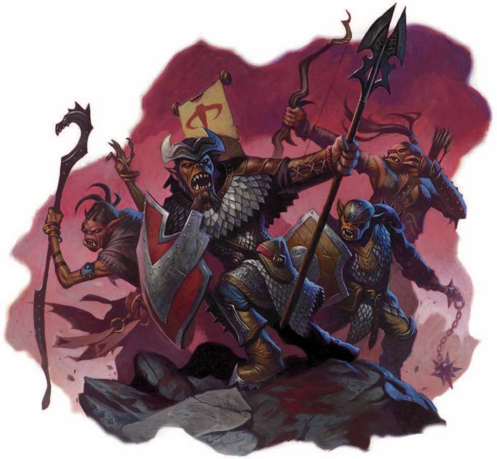

Its that time of year again folks. Goblin kind are gathering to bring the joy of hunting, gifts of treasure, and the happiness of comradorie to the Great Goblin King.

To please the Goblin King, goblin kind must follow these rules or else, you'll be forced to cheer on others as a follower. Followers are encouraged to cheer on fellow goblins. If you're lucky, the king may allow you to re-enter the games.
For each rule followed, goblins will be rewarded for their engagement based on when the treasure is gathered.